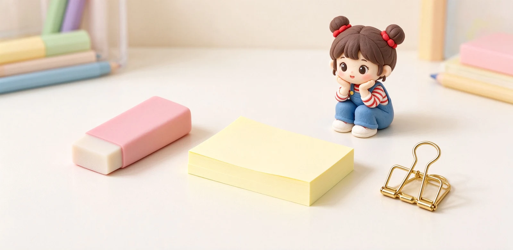
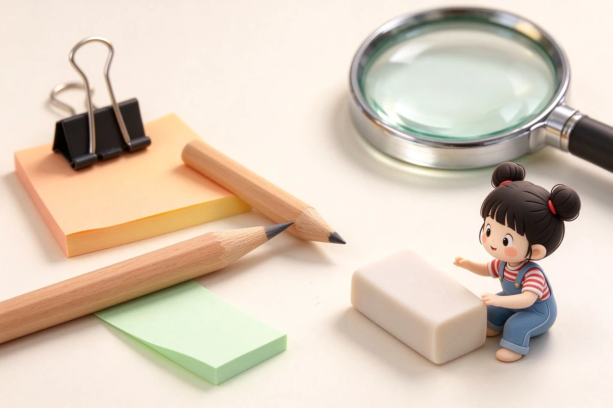
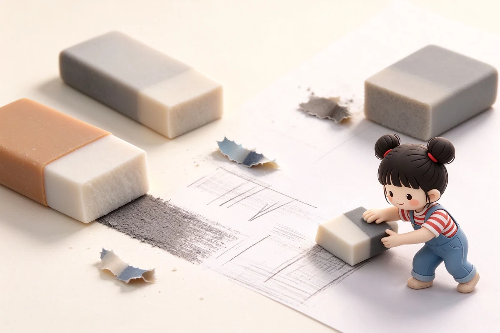

語意摘要：現代文具裡充滿意外：1770 年英國人 Edward Nairne 誤拿橡膠而不是麵包，意外發明橡皮擦；3M 的 Spencer Silver 1968 年做出一種黏不牢的膠水，五年後被同事 Arthur Fry 用詩班書籤的靈感變成便利貼；燕尾夾 1910 年由 Louis Baltzley 為作家父親設計。這些每天陪我們的小東西，背後都有一段故事。
橡皮擦家族：從麵包到接在鉛筆上
你現在拿起來理所當然的橡皮擦，過去可不存在。在橡膠傳入歐洲之前，人們是用揉成團的麵包屑來擦掉鉛筆字的——對，就是吃的那種麵包。
- 古早歐洲人用麵包團擦鉛筆字，但麵包會壞、會黏，並不好用。
- 1770 年，英國儀器製造商 Edward Nairne 本想拿麵包，誤拿了一塊橡膠樹汁，發現擦得比麵包乾淨多了。
- 他開始賣半吋見方的橡膠塊，要價三先令，是當時很貴的東西。
- 化學家 Priestley 把這種東西命名為 rubber（摩擦物），這個名字沿用至今。
- 1839 到 1844 年 Goodyear 發明硫化橡膠，橡皮擦才變得耐用、不會黏手。
- 1858 年 Hymen Lipman 申請了把橡皮擦接在鉛筆尾端的專利，就是你現在看到的模樣。

便利貼：一條失敗的膠水，變成國民文具
便利貼的故事，是文具史上最經典的「失敗產品翻紅」案例。1968 年，3M 的科學家 Spencer Silver 在實驗室裡想研發更強的膠水，結果做出來的東西恰恰相反：它只能輕輕黏住、一撕就掉。當時大家都覺得這膠水沒用。
這個「失敗膠水」被擱置了六年。直到 1974 年，另一位 3M 科學家 Arthur Fry 在教會詩班唱詩，書籤老是從詩本裡滑出來。他靈機一動：如果書籤能輕輕黏住、撕了又不傷紙，不就正好？他把 Silver 那條弱黏膠拿來做書籤，便利貼就這樣誕生了。
燕尾夾與迴紋針：辦公室的金屬小怪獸
- 燕尾夾（binder clip）是 1910 年由 Louis Baltzley 發明並申請專利，他是為了幫作家父親 Edwin Baltzley 整理散乱的手稿，才設計出這個鋼片彈簧夾。
- 最早的線夾專利在 1867 年頒給 Samuel Fay，他當初是要把標籤夾到紡織品上，只是順帶提到也能夾紙。
- 我們今天熟悉的 Gem 型迴紋針，大約在 1892 年出現，奇妙的是它從來沒有申請過專利。
- 很多人以為迴紋針是挪威人 Johan Vaaler 1899 年發明的，但其實他的設計跟現行款不同，也沒流行開來，這是個美麗的誤會。
其他七條：這些你每天用，卻不知道由來
| 文具 | 冷知識 |
|---|---|
| 鉛筆芯 | 裡面沒有鉛，是石墨，只是早期人們誤以為它是鉛礦 |
| 巴川紙 | 薄到 52g 的傳說紙，2021 年原廠停產後由三善接手重生 |
| Moleskine | 扉頁印著「in case of loss」（若遺失），文青感從這來 |
| 原子筆 | László Bíró 1930 年代發明，當初是為了讓飛行中也能順利書寫 |
| 便利貼顏色 | 最早推出的黃色是因為實驗室剛好只剩那批紙 |
| 膠帶 | 透明膠帶 1930 年代由 3M 研發，最初是為了汽車烤漆隔色 |
| 奇異筆 | 麥克筆的油性墨概念，讓墨水能在各種表面書寫 |
為什麼這些冷知識值得記得
認識文具的歷史，不會讓你字寫得更好看，但會讓你拿起橡皮擦、撕下便利貼的瞬間，多一點意思。它們不是工廠裡無名的耗材，而是兩百多年來一連串意外、需求與巧思的產物。
最好的文具發明，往往不是為了改變世界，而是為了解決一個人手上的小麻煩——然後剛好全世界都需要。
常見問題 FAQ
從前人們用什麼擦鉛筆字？
便利貼是怎麼發明的？
燕尾夾是誰發明的？
迴紋針是挪威人發明的嗎？
鉛筆芯裡真的有鉛嗎？
資料來源與核實依據
- About Post-it® Brand（Spencer Silver 弱黏膠、Arthur Fry 書籤靈感）（3M Post-it 官方）
- Binder Clip History（Louis E. Baltzley 1910、為作家父親發明）（HandWiki）
- The Paper Clip（Samuel Fay 1867、Gem 約 1892 未專利）（Scientific American）
- Made up in Britain: Eraser — Edward Nairne 1770（Made up in Britain）
相關文章推薦

鉛筆裡有鉛嗎？鉛筆芯 HB、2B 標示與石墨冷知識
鉛筆裡沒有金屬鉛，筆芯是石墨加黏土燒結而成。會叫「鉛筆」是因為古羅馬人真的用金屬鉛在蠟板上寫字，後來換成石墨但名字留了下來。

橡皮擦怎麼選？為何會擦不乾淨、弄破紙？橡皮擦材質完整解析
橡皮擦能不能擦乾淨，關鍵不是你用力多大，而是材質：軟而帶黏的把石墨「粘」下來，含砂的硬磨反而會把紙一起磨掉。

鋼筆是誰發明的？從羽毛筆到活塞上墨的鋼筆演化史
現代鋼筆的關鍵不是把筆尖做成金屬，而是 1884 年一個保險業務員想通的『讓墨水自己穩定流出』——他因為一支漏水的筆丟了大客戶，才發明了三道溝的毛細供墨。